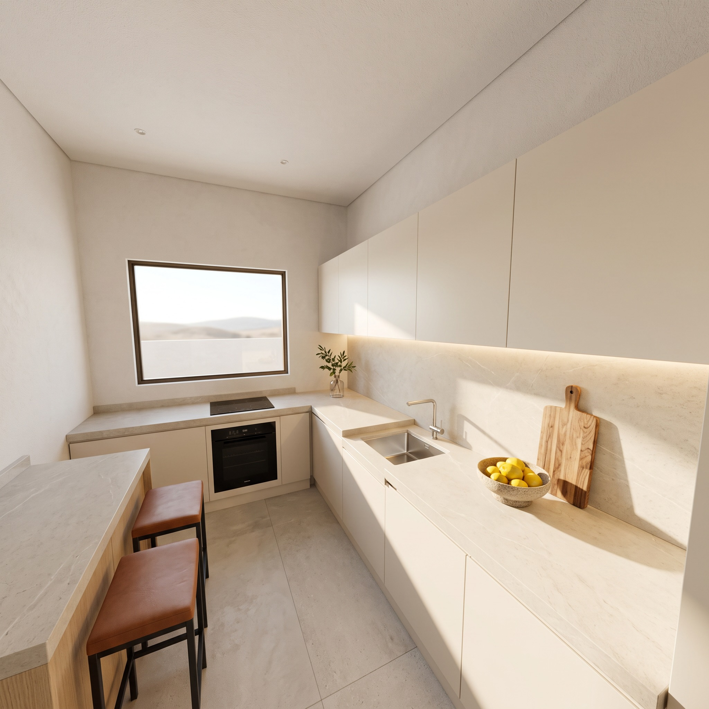
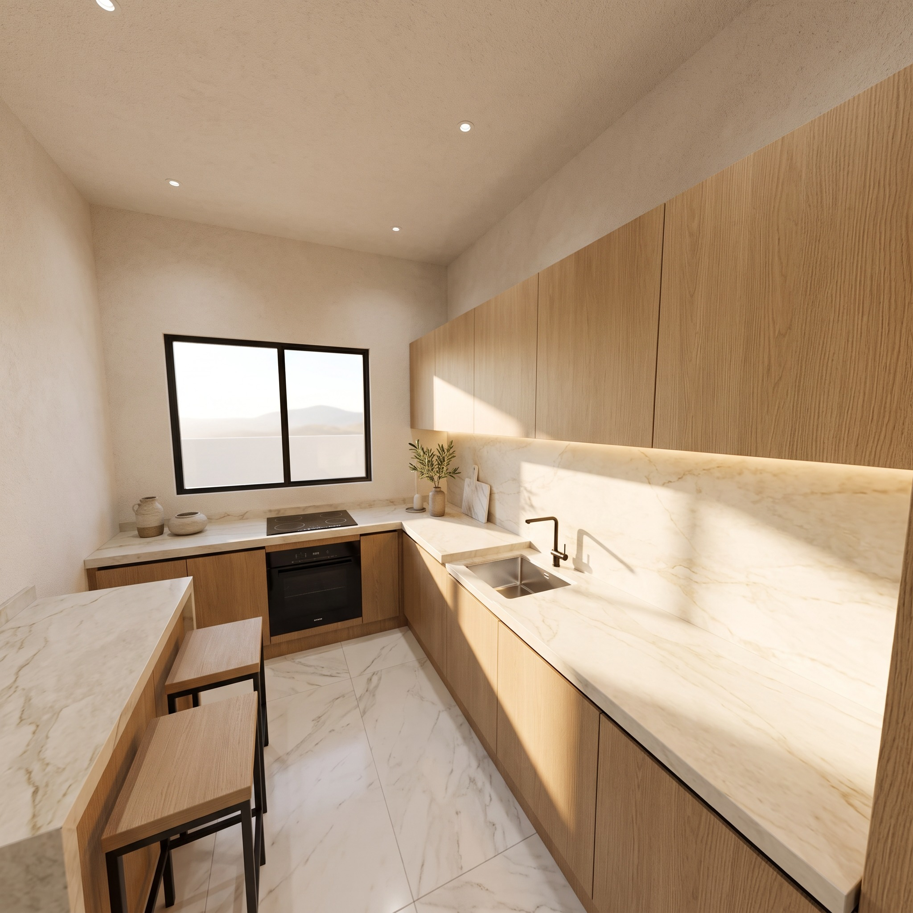

בדיקת מראה: אותו מבט במטבח, שתי גרסאות
שתי התמונות צוירו על אותו מודל תלת־ממדי, ברזולוציה כפולה. הגיאומטריה זהה: החלון, הכיריים, התנור, הכיור, הארונות העליונים הסגורים, האי ושני כיסאות הבר נמצאים באותו מקום בשתיהן. משתנים רק החומרים, התאורה והאביזרים.
הדמיה שנוצרה בבינה מלאכותית, לא צילום של הנכס. עלות הבדיקה: $0.24.

א׳ — כמו ההדמיות של היזם
חזיתות קרם ללא ידיות, משטחים וחיפוי באבן בז׳ בהירה, אי בעץ בהיר, כיסאות בר בעור קוניאק, רצפה אפורה־חמה.